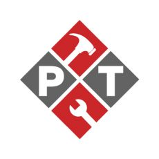

MITEX 2026 · Россия · Стенд 8D1501
Инструмент РТ
Карточка проверена 10 ноября 2026, 09:25 · Источник ↗ · Снимок оригинальной карточки ↗
О компании
Инструмент РТ – надежный партнер на рынке профессионального инструмента и оснастки. Компания работает с 2008 года, развивая направления дистрибуции, B2B и e-commerce. Мы представляем ведущие международные бренды и собственные торговые марки, обеспечивая полный цикл поставок: от анализа рынка и отбора производителей до контроля качества и логистики. Ассортимент включает ручной инструмент, оснастку, расходные материалы и сопутствующую продукцию. Мы сотрудничаем напрямую с заводами в Китае, что гарантирует конкурентные цены и стабильное качество. Инструмент РТ – член Торгово-промышленной палаты Республики Татарстан. Компания обеспечивает поставки по всей России и странам СНГ, развивает проекты под СТМ и предлагает партнерам комплексное сопровождение. Миссия: обеспечить клиентов инструментом, который работает на результат.
Контакты
Все контактные сведения из карточки
Контакты Телефон: 88005051252 E-mail: zakaz@instrument-rt.ru Адрес: Россия, Республика Татарстан, Казань, Завойского 23 Веб-сайт: https://instrument-rt.ru/ E-mail: zakaz@instrument-rt.ru Телефон: 88005051252
Ранее найденные соцсети — октябрь 2026
Эти ссылки найдены при предыдущем обходе сайтов компаний. Актуальность контактов уточняйте у участника.
Все рубрики участника
Mitex - Рубрикатор
- 6. Инструменты и оборудование для обработки и резки металла, проволоки, труб, камня, стекла, керамики, пластмасс, дерева
Зал
- Зал № 8
Участник выставки
- MITEX
Видео, каталоги и документы
В доступной карточке нет видео или документов. Смотрите сайт участника.